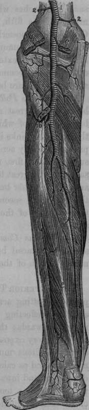

The Posterior Tibial Artery
Description
This section is from the book "Anatomy Of The Arteries Of The Human Body", by John Hatch Power. Also available from Amazon: Anatomy of the Arteries of the Human Body, with the Descriptive Anatomy of the Heart.
The Posterior Tibial Artery
This vessel may be exposed by cutting across the tendo Achillis at its upper part, and then reflecting the gastrocnemius, soleus, and plantaris muscles upwards: the deep tibial fascia may now be divided and the artery exposed. It extends from the inferior margin of the popliteus muscle to the fossa between the internal malleolus and os calcis: in this course it is directed obliquely downwards and inwards. Posteriorly it is crossed at its commencement by a tendinous arch connecting the two origins of the soleus muscle: the tendinous character of this arch will be well seen by cutting across the soleus muscle and turning up its superior portion, so as to expose its deep-seated surface. The artery is covered in the upper and middle third of the leg by the fleshy bellies of the gastrocnemius and soleus, by the plantaris tendon, and more immediately by an aponeurosis (the deep posterior tibial fascia) which is continuous with one of the expansions of the tendon of the semi-membranosus muscle.
In the inferior third of the leg the artery descends along the internal border of the tendo Achillis, which at first covers it a little, but lower down we find it covered only by the integuments and three layers of fascia, viz., by the deep tibial fascia just described, by another sent off from the internal margin of the tendo Achillis, and by a third, which may be distinguished by its gliding loosely over the posterior surface of the tendon. Anteriorly this artery corresponds successively, from above downwards, to the tibialis posticus muscle, to the flexor digitorum communis, and with the interposition of some areolar tissue, to the tibia. It is accompanied by two venae comites, one on either side: its corresponding nerve is internal to it in the upper part of the leg; but as the nerve descends it crosses the artery superficially, so as to become external to it inferiorly, thus separating the posterior tibial from the fibular artery.
Fig. 67. Arteries of the Back of the Leg.
1, Popliteal Artery. 2, 2, Superior Internal and External Articular Arteries. 3, 3, Inferior Internal and External Articu lar Arteries. 4, Middle Articular Artery. 5, Gastrocnemial Arteries. 6, Peroneal Artery. 7. Posterior Peroneal Branch. 8, Posterior Tibial Artery. 9, Calcanean Branches, a, Poplitea Muscle, b, c, Origin of the Gastrocnemius, d, Peroneal Muscles, e, Long Plexor of the Great Toe. f, Long Flexor of the Toes : that between the two latter is the Posterior Tibial Muscle.
When the artery has arrived in the fossa between the os calcis and internal malleolus, it is accompanied by its nerve, together with vessels, and tendons, which lie in the following order; commencing at the internal malleolus, and passing backwards, we find, first, the tendon of the tibialis posticus, then the tendon of the flexor longus communis, then a small vein, then the artery, then another small vein, next the posterior tibial nerve, and nearest the os calcis the tendon of the flexor pollicis longus.
Continue to: